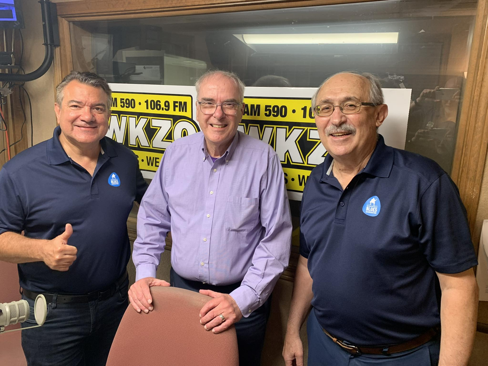
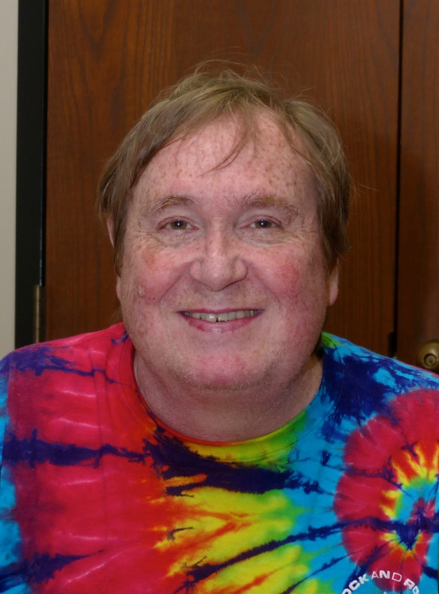

The Kalamazoo Valley Blues Association — a community, a mission, and a love for the blues.
The Kalamazoo Valley Blues Association is dedicated to promoting, preserving, and celebrating blues music and its cultural heritage in Southwest Michigan. We connect musicians, fans, venues, and communities in a shared passion for this foundational American art form.
The Kalamazoo Valley Blues Association was founded in the early 1990s by a dedicated group of blues fans and musicians who wanted to ensure that Southwest Michigan would always have a thriving blues scene.
What started as a small gathering of enthusiasts has grown into one of Michigan's most active blues music organizations — hosting hundreds of events each year, running education programs in local schools, and producing the annual Kalamazoo Blues Festival.
Through the decades, KVBA has navigated changing musical landscapes while staying true to the authentic heart of the blues. We've seen legends perform on our stages, watched young scholarship recipients go on to music careers, and built a community that keeps growing.
Today, KVBA is a 501(c)(3) nonprofit organization led by a volunteer board of directors, supported by hundreds of members, and powered by countless volunteers who show up because they love the music.

KVBA is governed by a volunteer board of dedicated blues community members. Contact us to learn about board opportunities.
Board listings will be updated with current member names. Contact KVBA to update board information.
KVBA is a registered 501(c)(3) nonprofit organization, which means your membership dues and donations may be tax-deductible. We are governed by a volunteer board and operate entirely in service of the blues community.
We welcome contributions of all kinds — financial support, in-kind donations, volunteer time, and sponsorships all make a meaningful difference in our ability to serve the community.
The KVBA is an organization made up entirely of volunteers — from the board of directors to the person collecting tickets at the festival gate. As a 501(c)(3) organization, our filings are available for public inspection.
We honor the musicians and community members who contributed so much to the Kalamazoo blues tradition. Their music lives on.

About 30 years ago the newly formed Kalamazoo Valley Blues Association decided to have a blues festival in downtown Kalamazoo. The weather was not kind and the event lost money — but someone stepped up with a plan. That person was Larry Bevins.
Larry's plan included recruiting sponsors, holding a series of fundraisers, and negotiating with those owed money. Another festival was planned. Larry, who was not part of the Board at the time, was elected the new President to lead this effort (1996).
Not only did the plan work, in 2001 Larry traveled to Memphis to accept the Blues Organization of the Year award! The Kalamazoo Chamber of Commerce made July Blues month. Larry, and his volunteer Board, had put Kalamazoo on the blues map! A book was published in 1999 called "Blues For Dummies" with a list of the top 10 blues festivals not to miss — among them was the Kalamazoo Blues Festival.
It was always Larry's vision to get national recognition. He got it! For those now doing the booking, the major agencies are on speed dial. That's all because of Larry Bevins who refused to let it die and dreamed of something bigger.
But blues wasn't his only love. The man could barbeque some ribs! He entered an annual rib competition with a few other KVBA members and took 2nd place at RibFest. Music, BBQ, and family is what Larry was all about. He will be greatly missed in the blues world and beyond. Here at KVBA we celebrate the life and impact of Larry and send our sincere condolences to Lorie and Katie.
Remembering our dear friend John Steele, who passed in November 2021. His legacy includes many contributions to the local blues scene. John served as board member and treasurer to the KVBA, and his dedication helped sustain the organization through many years of growth.
RIP John.
Mildred "Millie" Mary Lambert, born February 5, 1949, passed away peacefully on August 27, 2024, at the age of 75. A Kalamazoo treasure through and through, Millie served on the KVBA board and gave herself fully to the blues community she loved.
Millie spent her career as an elementary teacher in Kalamazoo Public Schools and brought that same warmth and dedication to everything she did for KVBA. Her love of live music — especially the Out of Favor Boys — and her easy laugh made her a fixture at events and a friend to everyone she met.
She is survived by her sister Ann Walker; niece Mari Bryant; niece Lindsay (John) Osborn; and great-nieces and nephews Cadence, Gabriella, Owen, and Isaac Osborn. Her spirit lives on in the music she championed and the people she brought together. She will be greatly missed.
To add a tribute to a musician or community member, please contact us.